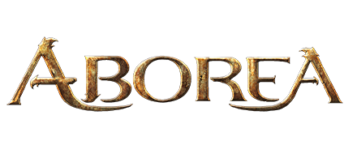

CALCULATOR
HOW TO
IMPRESSUM
Herzlich Willkommen und seid gegrüßt hier auf aborea.dibaku.de!
Wenn Ihr begeisterte Abora-Spieler seid und euch das Kämpfen durch ein wenig technische Unterstützung erleichtern wollt,
seid Ihr hier
absolut
richtig! Wir planen für die Zukunft auch weitere Projekte neben dem Calculator!
Also schaut ab und zu mal bei uns vorbei! Zum Rechner geht es dann
hier
oder indem Ihr mit der Maus links über die
weißen Halbkreise fahrt! Wir wünschen Euch viel Spaß! Solltet Ihr Probleme mit der Bedienung oder Fragen dazu haben,
schaut im
HowTo
-Bereich vorbei!
Dieses Projekt und die Nutzung des Logos wurde freundlicherweise von Aborea genehmigt und unterstützt.
Einfach hier klicken um zur Website zu gelangen:
aborea.de
An dieser Stelle würden wir Euch gerne ein bisschen von unserer Spielgruppe erzählen.
Unsere Gruppe besteht aus 5 Spielern und dem Spielleiter. Folgende Völker und Berufe sind bei uns vertreten:
1.
Mensch als Zauberer
mit dem Namen Şivian
2.
Mensch als Krieger
mit dem Namen Olaf (erbte ein verzaubertes Schwert, macht mehr Schaden an Orks)
3. (Kristall-)
Elf als Waldläufer
mit dem Namen Thoron Ivor
4.
Gnom als Dieb
mit dem Namen Corgrim (versuchte in seiner Vergangenheit einen Fürsten zu bestehlen)
5.
Zwerg als Priester
mit dem Namen Tharwen Heilblick (glaubt an den Gott Barros)
Zusammen bilden die 5 die sogenannte
Inquisition
, dessen Aufgabe es ist, eine von Dämonen besessene Welt zu erlösen.
Dies erachtet sich jedoch als äußerst schwierig, da die Dämonen nicht nur von Tag zu Tag stärker zu werden scheinen,
sondern als allererstes der Ursprung gefunden werden muss.
Da wir alles noch Anfänger sind, haben wir vorerst einige optionale Regeln des Regelwerks weggelassen.
Wir planen jedoch, diese mit steigender Spielerfahrung hinzuzufügen.
Außerdem hat unser Spielleiter eine eigene Schatzliste erstellt. Je nachdem wie wertvoll der gefundene Schatz ist,
dürfen wir zuzsätzlich zu einem D10 noch einen D6 würfeln. Alle Schätze mit einer Nummer über 10 sind dann nochmal wertvoller.
Außerdem denkt sich unser Spielleiter Rätsel aus und baut diese an manchen Stellen ein.
Deshalb müssen wir die Umgebung manchmal noch genauer absuchen, um versteckte Schlüssel o.Ä. zu finden.
Das macht das Spielen nochmal etwas spannender.
Wenn Ihr mehr von unserem Abenteuer erfahren wollt oder Euch die erweiterte Schatzliste interessiert, schreibt uns doch eine
E-Mail
.
Erzählt uns doch auch einmal von Euren Abenteuern oder Eurer Gruppe! Wir sind gespannt!